KantorKu-AI Virtual Office Assets
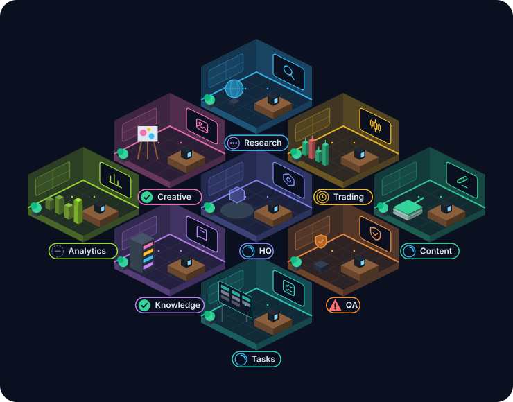
Rooms
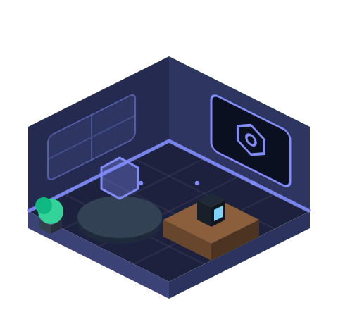
HQ / AI COO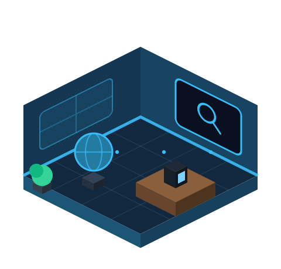
Research Office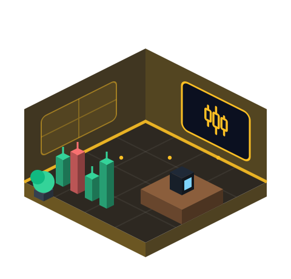
Trading Intelligence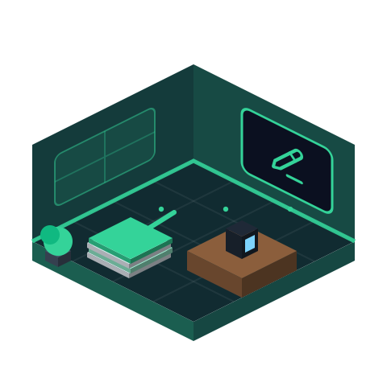
Content Studio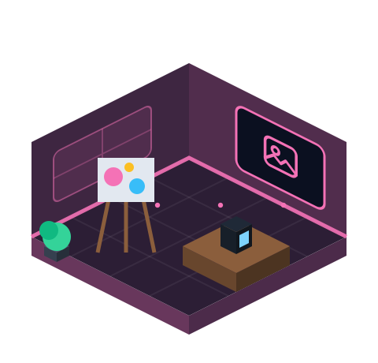
Creative Studio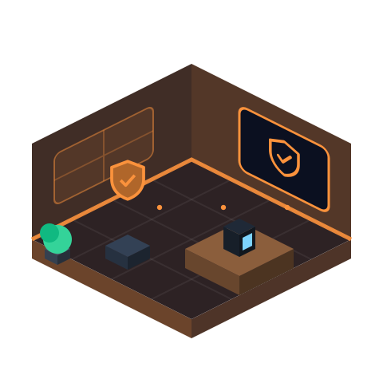
QA & Compliance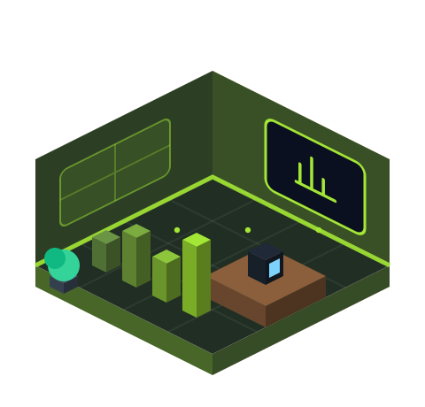
Analytics & Growth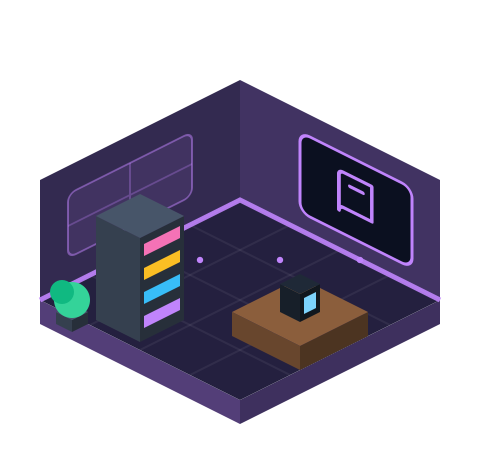
Knowledge Center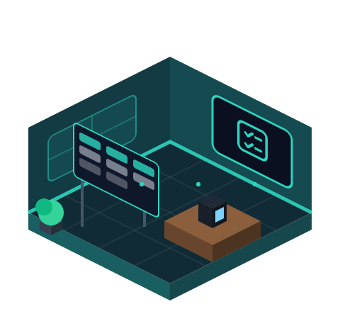
Task / Workflow CenterStatus indicators
working
thinking
waiting
completed
error
offline
Department icons
hq
research
trading
content
creative
qa
analytics
knowledge
tasks
AI employee avatars
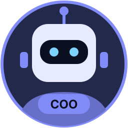
AI COO / Orchestrator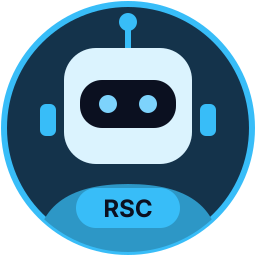
Research Agent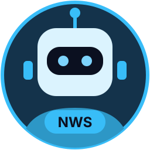
News Verification Agent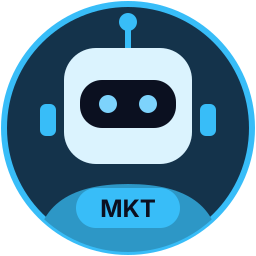
Market Research Agent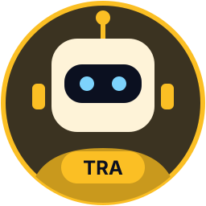
Trading Analyst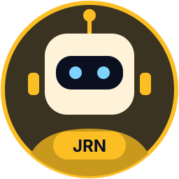
Trading Journal Agent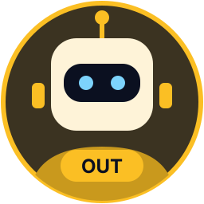
Market Outlook Agent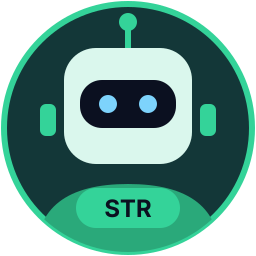
Content Strategist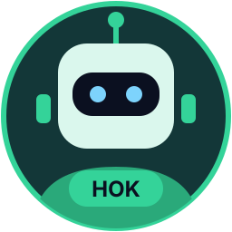
Hook Agent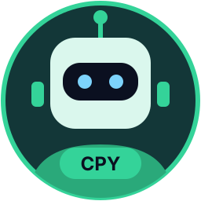
Copywriter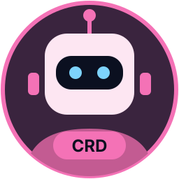
Creative Director / Slide Designer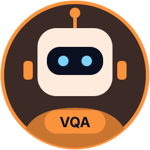
Visual QA Agent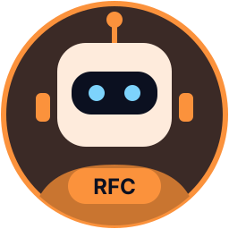
Risk & Fact Check Agent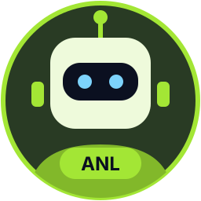
Analytics Agent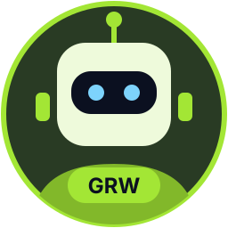
Growth / Experiment Agent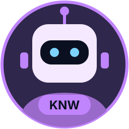
Knowledge Agent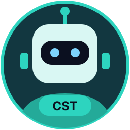
Cost / Model Routing ManagerOffice sprites
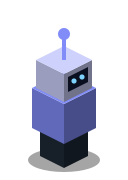
coo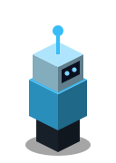
research
news-verification
market-research
trading-analyst
trading-journal
market-outlook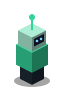
content-strategist
hook
copywriter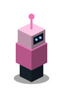
creative-director
visual-qa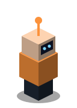
risk-factcheck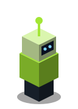
analytics
growth-experiment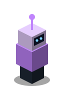
knowledge
cost-router